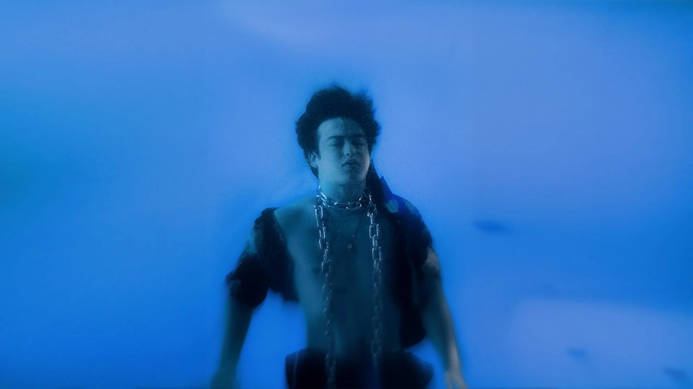
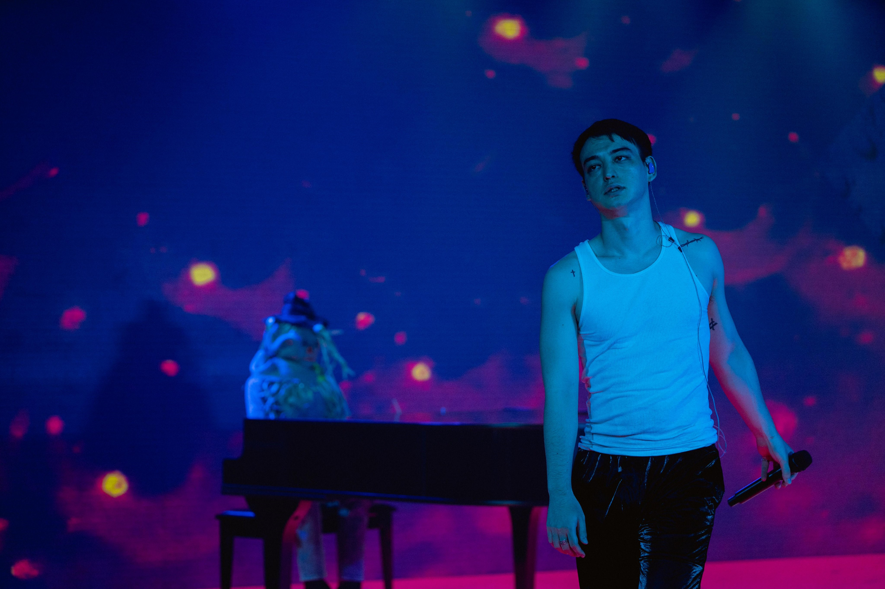
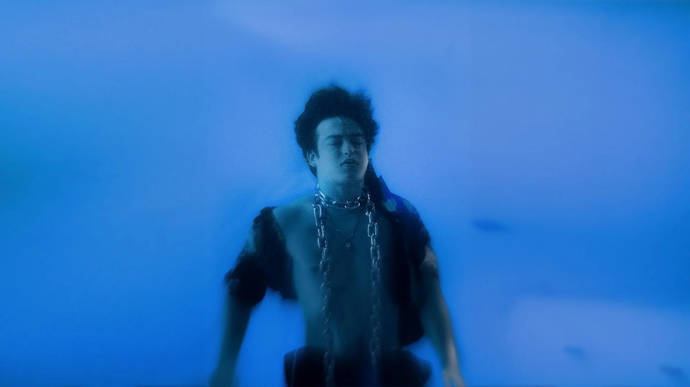
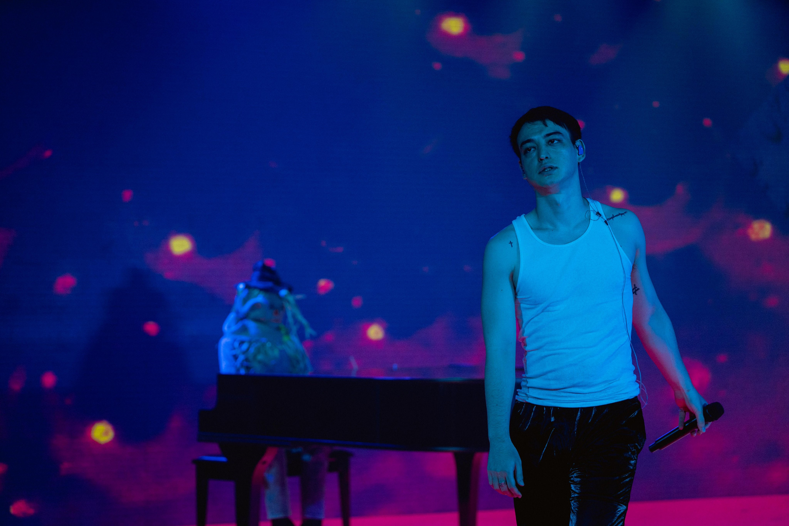

Joji é o nome artístico do cantor George Miller. Ele ganhou fama inicialmente como personalidade da internet, criando vídeos de comédia e música sob o pseudônimo "Filthy Frank". Em 2017, Joji começou sua carreira musical e lançou seu primeiro single. Desde então, ele lançou três álbuns de estúdio. Sua música é conhecida por suas letras introspectivas, instrumentais atmosféricos e vocais emotivos que exploram temas como amor, perda, solidão e auto-reflexão.